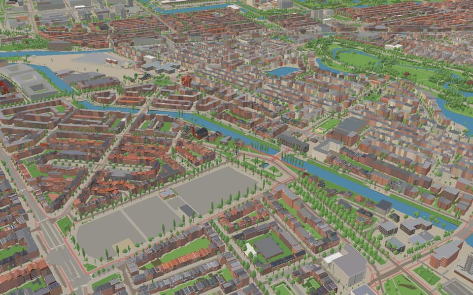
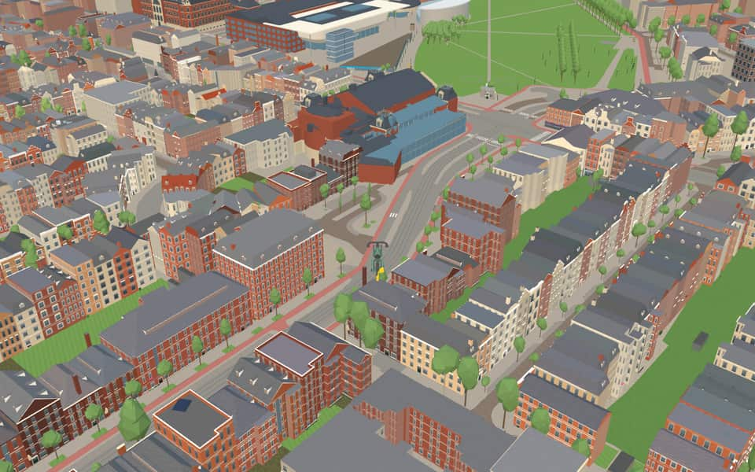
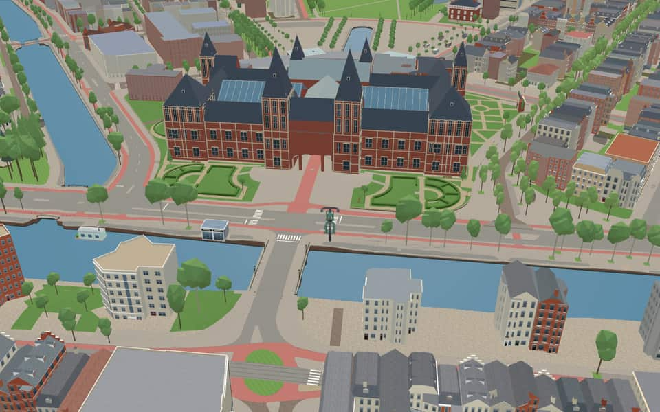
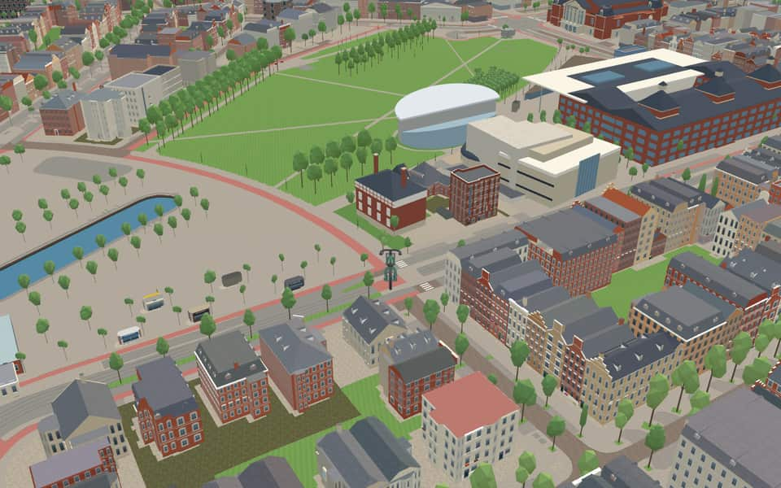

Quarter · Amsterdam
Oud-Zuid
Oud-Zuid (Dutch for "Old South") is an area of Amsterdam in the borough of Zuid. In the city's present-day administrative geography, Oud-Zuid is one of the areas used for area-based municipal administration and has the code GK11. en.wikipedia.org
The name. Oud-Zuid means 'Old South'. From 1998 to 2010 it was also the name of a larger borough that included De Pijp. en.wikipedia.org


In the game
Frames from a ride through Oud-Zuid.




6 more photos of Oud-Zuid


.jpeg){kind=link}


Built here
Buildings modelled one by one for the ride.
Royal Concertgebouw
Rijksmuseum
Moco Museum
- No picture yet
Van Gogh Museum

Haarlemmermeerstation
Photo: Haarlemmermeerstation.jpg (Nikolas Tzimoulis, CC BY-SA 3.0 nl)

Vondelpark Open Air Theater / stage canopy
- No picture yet
Herepoort / Bergpoort — Rijksmuseum garden
- No picture yet
OCCII / former horse-tram coach house

Huize Lydia / Huis van de Wijk Lydia
Photo: Amsterdam Huize Lydia 001.JPG (Janericloebe, CC BY 3.0)
- No picture yet
Sint-Agneskerk
- No picture yet
Sint-Petrus-en-Pauluskerk
- No picture yet
Stedelijk Museum

Vondelmonument
Photo: Joost van den Vondel -monument.JPG (Hullernuc, CC BY-SA 3.0)
- No picture yet
Mama Baranka (Moeder Rots, Vondelpark)
- No picture yet
Obrechtkerk


Willem de Zwijgerkerk
Photo: Olympiaweg, Willem de Zwijgerkerk.jpg (Alf van Beem, CC0)

Raw Aron Schuster Synagoge
Photo: Amsterdamrawaronschustersynagoge.jpg (Fnorp at Dutch Wikipedia, CC BY-SA 3.0)
- No picture yet
Beta Boulders
- No picture yet
Blauwe Theehuis
- No picture yet
Figure decoupee (Picasso, Vondelpark)
- No picture yet
Groot Melkhuis
- No picture yet
Hilton Amsterdam
- No picture yet
Kazerne Dirk


.jpg){kind=link}


10 more modelled buildings
- Kinderbrug: Boy with rabbits (Hildo Krop) Landmark model
- Mandarin Oriental Conservatorium, Amsterdam Landmark model
- Vondelpark Muziektent / iron bandstand Landmark model
- Obrechtkerk Hand-built landmark
- Rijksmuseum Hand-built landmark
- Stedelijk Hand-built landmark
- Van Gogh Museum Hand-built landmark
- Apollolaan 4 / Stadionweg 5 (Apollohal), Amsterdam-Zuid (Olympisch Kwartier) Modelled building
- OBA Olympisch Kwartier, Laan der Hesperiden 18, Amsterdam (2005; library in the ground floor of a brick housing block, one pand) Modelled building
- Vossius Gymnasium, Messchaertstraat 1, Amsterdam (1930 brick school, three wings, tiled roofs with dormer bands) Modelled building
Did you know
Trivia the ride can show you here.
- The P.C. Hooftstraat counts as the main luxury shopping street, with more shops on the Van Baerlestraat and Cornelis Schuytstraat. Wikipedia (translated from Dutch)
- The Concertgebouw opened on 11 April 1888 with an orchestra of 120 musicians and a chorus of 500 singers. Wikipedia
- Berlage designed Plan Zuid for the city's growth south; his second design was adopted in 1917. Wikipedia (translated from Dutch)
- The ‘I AMsterdam’ letters stood on the Museumplein in front of the Rijksmuseum until 4 December 2018. Wikipedia
- The Van Gogh Museum, opened on 2 June 1973, has buildings by Gerrit Rietveld and Kisho Kurokawa. Wikipedia
- Building of the Concertgebouw began in 1883 in a pasture then outside the city, in Nieuwer-Amstel. Wikipedia
- The Stedelijk Museum's 21st-century wing with its entrance was designed by Benthem Crouwel Architects. Wikipedia
- Amsterdam Memorial to the Canadian LiberatorsThousands of Canadian troops entered the city in 1945 to liberate Amsterdam. nl.wikipedia.org
- Amsterdam Memorial to the Canadian LiberatorsAbout half a million local residents cheered on the arriving soldiers. nl.wikipedia.org
- Amsterdam Memorial to the Canadian LiberatorsOn May 5, 1980, Canadians retraced their 1945 liberation route through the city. nl.wikipedia.org
- Amsterdam Memorial to the Canadian LiberatorsSculptor Jan de Baat created the steel flag that rises from a grassy field. nl.wikipedia.org
- ConcertgebouwConstruction started in a pasture outside Amsterdam that later became part of Amstelveen. en.wikipedia.org
- ConcertgebouwA massive inaugural performance featured 120 musicians and 500 singers on stage. en.wikipedia.org
- ConcertgebouwThe Dutch term Concertgebouw translates directly to concert building. en.wikipedia.org
144 more facts
- ConcertgebouwQueen Beatrix granted the royal title Koninklijk on April 11, 2013. en.wikipedia.org
- HaarlemmermeerstationThe station was originally called Willemspark Station before adopting its current name. en.wikipedia.org
- HaarlemmermeerstationPassenger service ended in 1950, leaving only coal freight until 1972. en.wikipedia.org
- HaarlemmermeerstationThe station and its line became a tram museum route starting in 1975. en.wikipedia.org
- HaarlemmermeerstationParts of the old track briefly supplied materials for Schiphol construction between 1976 and 1981. en.wikipedia.org
- HerepoortFour distinct versions of the gate were constructed between the 11th and early 17th centuries. nl.wikipedia.org
- HerepoortCity archaeologist Kortekaas dates the first Herepoort to around the year 1100. nl.wikipedia.org
- Huis van de wijk LydiaThe original construction between 1924 and 1927 included 158 sleeping quarters for women and girls. nl.wikipedia.org
- Huis van de wijk LydiaThe Amsterdam chess club Caïssa maintains its dedicated playing room within this building. nl.wikipedia.org
- Koningin EmmaVandals severed the statue's head and shoulders in September 1987 before it was restored after the head was found. nl.wikipedia.org
- Koningin EmmaThe monument was officially unveiled to the public in 1938. nl.wikipedia.org
- Mama Baranka (Moeder Rots)The sculpture stands directly on the ground without a pedestal to symbolize the woman's power and connection to the earth. nl.wikipedia.org
- Moco MuseumKim Logchies-Prins and Lionel Logchies founded the museum in 2016 as an independent initiative. en.wikipedia.org
- Moco MuseumThe Amsterdam location opened in 2016 inside a historic townhouse. en.wikipedia.org
- Moco MuseumEduard Cuypers designed the building, being the nephew of Pierre Cuypers. en.wikipedia.org
- Monument Indië-NederlandFunds remaining after a mausoleum's completion paid for this monument in Amsterdam and another in Batavia. en.wikipedia.org
- Monument Indië-NederlandArchitect Gijsbert Friedhoff and sculptor Frits van Hall won the contest to design this structure. en.wikipedia.org
- Monument Indië-NederlandA female figure flanked by two lions symbolizes Dutch supremacy over conquered peoples of the East Indies. en.wikipedia.org
- Monument Indië-NederlandPolitical pressure forced a name change to Monument Indië-Nederland in 2004. en.wikipedia.org
- Monument voor gefusilleerde verzetstrijdersOn October 24, 1944, German occupiers executed 29 prisoners here as reprisal for resistance actions. nl.wikipedia.org
- Monument voor gefusilleerde verzetstrijdersSculptor Jan Havermans designed the statue after receiving his final order in February 1951. nl.wikipedia.org
- ObrechtkerkBishop Augustinus Callier consecrated the church in 1911. en.wikipedia.org
- ObrechtkerkArtists including Jan Eloy Brom and Otto van Rees contributed to the church's decoration. en.wikipedia.org
- OCCIIThe original building was squatted in 1984 before being legalized five years later. en.wikipedia.org
- OCCIIArchitect Abraham Salm designed the structure originally as a horse tram garage in 1883-84. en.wikipedia.org
- OlympiahuisDemolition threats in the early 2000s forced the cottage to be moved just a few meters. nl.wikipedia.org
- OlympiahuisSpecial Olympic stamps were issued there from March to September 1928. nl.wikipedia.org
- OlympiahuisA temporary post office on the grounds applied a special stamp to these mail items. nl.wikipedia.org
- Ravensbrück memorialThe monument honors Dutch women who perished in the Nazi camp Ravensbrück. nl.wikipedia.org
- Ravensbrück memorialThe initiative for this war monument was taken in 1972 by the Vrouwen Committee of Ravenbrück. nl.wikipedia.org
- Ravensbrück memorialEleven stainless steel panels arranged in a semicircle reflect light and sound from a central pillar. nl.wikipedia.org
- Ravensbrück memorialLight flashes symbolizing searchlights are separated by moments of silence between signals. nl.wikipedia.org
- Raw Aron Schuster SynagogeThe Raw Aron Schuster Synagoge was named after Rabbi Aron Schuster, who retired in 1973 to live in Jerusalem. nl.wikipedia.org
- Raw Aron Schuster SynagogeAfter World War II, the first service resumed on Rosh Hashanah 1945 using reassembled pre-war sofas. nl.wikipedia.org
- Raw Aron Schuster SynagogeHans Bloemendal served as the synagogue's cantor from 1949 until 2009. nl.wikipedia.org
- RijksmuseumEarly holdings lacked works by Rembrandt, Vermeer, or Frans Hals despite their fame. en.wikipedia.org
- RijksmuseumNapoleon took the stadholder's collection to Paris before it returned in 1815. en.wikipedia.org
- RijksmuseumThe exhibition featured marriage portraits of Marten Soolmans and Oopjen Coppit. en.wikipedia.org
- RijksmuseumOver 300 prints were shown alongside 22 paintings and 60 drawings in one collection. en.wikipedia.org
- Sint-AgneskerkSint-Agneskerk honors Agnes, a young Roman martyr. nl.wikipedia.org
- Sint-AgneskerkJan Stuyt modeled the church after ancient Christian basilicas in Rome. nl.wikipedia.org
- Sint-AgneskerkThe tower was added during a second construction phase between 1930 and 1932. nl.wikipedia.org
- Sint-AgneskerkConstruction of the building spanned from 1919 until its completion in 1932. nl.wikipedia.org
- Sint-Petrus-en-PauluskerkA rare Dordrecht Rotating Tabernacle from 1789 is housed within this church. nl.wikipedia.org
- Stedelijk Museum AmsterdamThe original 19th-century structure was designed by architect Adriaan Willem Weissman. en.wikipedia.org
- Van Gogh MuseumA technology-driven immersive exhibition launched there in 2019. en.wikipedia.org
- Van Gogh MuseumJohanna van Gogh-Bonger sold many paintings to spread knowledge while keeping a private collection. en.wikipedia.org
- Van Gogh MuseumThe collection was transferred to the state-initiated Vincent van Gogh Foundation in 1962. en.wikipedia.org
- Van Gogh MuseumVincent Willem van Gogh inherited the art collection from his mother in 1925. en.wikipedia.org
- VondelmonumentThe municipality of Amsterdam acquired the full park in 1953, though it held only the statue's square meters since 1868. nl.wikipedia.org
- VondelmonumentIn 1942, the monument celebrated its 75th anniversary during the Occupation. nl.wikipedia.org
- VondelmonumentNapoleon III is specifically mentioned as one of the crowned heads who contributed to the statue. nl.wikipedia.org
- Vondelpark Open Air TheaterAttendees pay no entry fee, though a voluntary donation is requested for the free summer shows. nl.wikipedia.org
- Vondelpark Open Air TheaterThe theater has hosted amateur and professional performances every summer since 1974. nl.wikipedia.org
- Willem de ZwijgerkerkStained glass windows by Kees Kuiler depict Christmas, Easter, and Pentecost. nl.wikipedia.org
- Willem de ZwijgerkerkGerrit van Leeuwen built the organ, which was restored in 2008. nl.wikipedia.org
- Zigeunermonument - Hel en VuurRoma and Sinti gather annually at the site on August 1st to commemorate the Auschwitz gassings. nl.wikipedia.org
- Museum SquareA 1999 reconstruction by Sven-Ingvar Andersson added underground parking and a supermarket. en.wikipedia.org
- Museum SquareThe famous I AMsterdam sign stood here until city officials removed it in December 2018. en.wikipedia.org
- Museum SquareVisitors can explore the House of Bols and the Diamond Museum on this site. en.wikipedia.org
- Park de SchinkeleilandenThe Frans Otten Stadium has occupied the site since 2004. nl.wikipedia.org
- Park de SchinkeleilandenLandscape architects Sant and Co designed this four-island park. nl.wikipedia.org
- Park de SchinkeleilandenA continuous cycle path named Piet Kranenbergpad opened here in 2007. nl.wikipedia.org
- Aldo van EyckbrugAlthough dated 1937, the bridge was not ready for use until a year later due to construction delays. nl.wikipedia.org
- BoerenweteringbrugHildo Krop created inward-facing sculptures that stand as blind pillars on the supports. nl.wikipedia.org
- BoerenweteringbrugLocal legend claims these images refer to a poem by Abraham Eliazer van Collem. nl.wikipedia.org
- CeintuurbrugPiet Kramer designed the current structure in 1927 using alternating horizontal and vertical bricks. nl.wikipedia.org
- CeintuurbrugA major renovation began in 2014 to widen the bridge and replace a tram stop that had served commuters for 110 years. nl.wikipedia.org
- Dick SchmüllbrugAn original urinal on the bridge was eventually closed off to the public. nl.wikipedia.org
- Dick SchmüllbrugConstruction began in July 1940 to replace an older iron emergency bridge. nl.wikipedia.org
- Hanny MichaelisbrugPiet Kramer designed this structure using the distinctive Amsterdam School style around 1927. nl.wikipedia.org
- Jan WilsbrugJan Wilsbrug honors architect Jan Wils, who designed the nearby Olympic Stadium and two famous Citroën buildings. en.wikipedia.org
- KabouterbrugThe name Kabouterbrug derives from the gnome movement, replacing earlier unofficial titles. nl.wikipedia.org
- KabouterbrugMajor maintenance work took the bridge out of service for a period in 2017. nl.wikipedia.org
- KabouterbrugSchoolchildren on bicycles were a primary reason for building this direct route quickly. nl.wikipedia.org
- RiekerhavenbrugThe Riekerhavenbrug took its name from the Riekerhaven, which itself was named after the village of Rijk. nl.wikipedia.org
- RiekerhavenbrugDesigner Piet Kramer's son Friso created a lamppost on the northern headland of this structure. nl.wikipedia.org
- Timo SmeehuijzenbrugPiet Kramer designed this Amsterdam School structure featuring alternating brick and natural stone. nl.wikipedia.org
- Timo SmeehuijzenbrugSculptures of two seals and two snakes by Hildo Krop adorn the bridge pillars. nl.wikipedia.org
- VondelbrugSimplified plans removed original features like climbing ivy and a park ranger's cottage due to lack of funds. nl.wikipedia.org
- ZeilbrugMunicipal documents once listed it only as bridge 348, ignoring the name Zeilbrug. nl.wikipedia.org
- ZeilbrugThe Amsterdam Street Names Book 2010 officially adopted the name Zeilbrug for bridge 348. nl.wikipedia.org
- ZeilbrugAmsterdam School architect Piet Kramer designed the bridge alongside engineer Wichert Arend de Graaf. nl.wikipedia.org
- ZeilbrugGranite sculptures by Hildo Krop depicting fishermen, ships, and seal heads adorn the structure. nl.wikipedia.org
- BoerenweteringThe ditch was widened after the Amsteldijk was built to drain sinking polder land further north. nl.wikipedia.org
- Nieuwe MeersluisThe current lock opened on July 1, 1942 to replace the older Overtoomse Sluis. nl.wikipedia.org
- Nieuwe MeersluisA new control center was later built directly halfway over the old lock keeper's post. nl.wikipedia.org
- Nieuwe MeersluisSliding sluice doors on rails also serve as the carriers for bridge decks. nl.wikipedia.org
- Noorder AmstelkanaalThe canal is absent from street name and postal code books because its banks have different names. nl.wikipedia.org
- Noorder AmstelkanaalTram line 5 crosses the canal on the Timo Smeehuijzenbrug. nl.wikipedia.org
- Noorder AmstelkanaalThe Lyceumbrug connects the Amsterdam Lyceum to Olympiaplein. nl.wikipedia.org
- SchinkelA dam blocked the river in 1434 to stop shipping, forcing vessels to take a long detour via Spaarndam. nl.wikipedia.org
- SchinkelIn 1515, a drawbridge called an overtoom was built where only small ships could be pulled across manually. nl.wikipedia.org
- SchinkelUnlike city canals, the Schinkel still actively transports goods today. nl.wikipedia.org
- SchinkelA large community of living boats has settled near the lock on this waterway. nl.wikipedia.org
- SingelgrachtThe name Singelgracht derives from the Dutch word omsingelen, meaning to surround. en.wikipedia.org
- SingelgrachtStreets like Marnixkade line the inside while Nassaukade runs along the outside. en.wikipedia.org
- StadiongrachtThe northern section now runs dry because it lost its direct water connection to the Noorder Amstel Canal. nl.wikipedia.org
- StadiongrachtA small lock exists here but no longer functions as one since water levels are identical on both sides. nl.wikipedia.org
- StadiongrachtThe canal's name does not appear in postal codes, while its quays carry distinct names like Afroditekade. nl.wikipedia.org
- WestlandgrachtAmsterdam built this waterway in the 1920s on land annexed from Sloten in 1921. nl.wikipedia.org
- WestlandgrachtA nearby sluice separates the urban basin level from the lower polder level of the Slotervaart. nl.wikipedia.org
- Zuider AmstelkanaalTram lines 5 and 24 cross the canal on two of its eight bridges. nl.wikipedia.org
- AalsmeerwegUntil 1975, this road served as the main access route from The Hague and Schiphol. nl.wikipedia.org
- BeethovenstraatTrendy restaurants and bars have opened here in increasing numbers since the coronavirus crisis. nl.wikipedia.org
- BeethovenstraatBridge 417 allowed the street to cross the Zuider Amstel Canal in 1939 or 1940. nl.wikipedia.org
- BeethovenstraatActress Fien de la Mar lived here before jumping from a two-meter window in 1965. nl.wikipedia.org
- DiepenbrockstraatA clairvoyant prophet lived here from the 1980s until her death, having established a chapel dedicated to the Virgin of all Peoples. nl.wikipedia.org
- HaarlemmermeerstraatAmsterdam laid out this street in 1927 using territory annexed from Sloten six years earlier. nl.wikipedia.org
- HavenstraatHavenstraat means harbor street, named for a ship mooring place. nl.wikipedia.org
- HavenstraatNearby streets share shipping names like Vaartstraat and Zeilstraat. nl.wikipedia.org
- HavenstraatUntil 2024, the street contained only two odd house numbers: 3 and 5. nl.wikipedia.org
- HavenstraatThe prison at number 6 was renovated from 2019 to become the British School of Amsterdam. nl.wikipedia.org
- Henk SneevlietwegA planned railway station was intended for this location but was never built. nl.wikipedia.org
- Henk SneevlietwegA tunnel was built where the road crosses the Ringspoorbaan railway line. nl.wikipedia.org
- Henk SneevlietwegNo house numbers exist on the main stretch of Henk Sneevlietweg itself. nl.wikipedia.org
- HobbemakadeThe name honors Meindert Hobbema, a landscape painter who lived from 1638 to 1709. nl.wikipedia.org
- HobbemakadeA different Hobbemakade once existed on the site of today's Museumplein until 1893. nl.wikipedia.org
- HobbemakadeImportant buildings along this route include the Zuiderbad swimming pool and the Montessori Lyceum Amsterdam. nl.wikipedia.org
- HoofddorpwegHoofddorpweg takes its name from the town of Hoofddorp in the Haarlemmermeer. nl.wikipedia.org
- HoofddorpwegBefore district divisions, this road belonged to the Overtoomse Veld neighborhood. nl.wikipedia.org
- IJsbaanpadThe road was named IJsbaanpad in 1949 after the nearby ice club field submerged in winter. nl.wikipedia.org
- IJsbaanpadThe former site of the ice club is now occupied by tennis courts. nl.wikipedia.org
- IJsbaanpadBridge 999, the white Post-Print Happiness Bridge, has connected the street to the Olympic Stadium since 2009. nl.wikipedia.org
- KoninginnewegA bridge over the Schinkel connecting the street to Hoofddorpweg has stood since 1927. nl.wikipedia.org
- ParnassuswegIn the 1950s, the road was extended toward Buitenveldert to reach the A10 ring road. nl.wikipedia.org
- ParnassuswegSince 1972, the road has been raised to create a highway-like appearance with lower paths for cyclists and pedestrians. nl.wikipedia.org
- ParnassuswegTram line 5 began operating on the southern section of the street in 2008. nl.wikipedia.org
- StadhouderskadeStadhouderskade was named in 1872 to honor stadholders William II and William III. nl.wikipedia.org
- StadhouderskadeA rainwater retention basin sits beneath the street near the Rijksmuseum. nl.wikipedia.org
- StadhouderskadeStadhouderskade 55 once housed a chapel, then the Van Nispenhuis which burned down before becoming the Willemshuis. nl.wikipedia.org
- StadhouderskadeA double symmetrical townhouse on Stadhouderskade may have been the home of pediatrician Sybren Schippers. nl.wikipedia.org
- StadionpleinArchitects designed six new closed blocks using styles based on the Amsterdam School and Berlage. nl.wikipedia.org
- StadionpleinPart of Stadionplein was renamed Laan der Hesperiden due to the district's construction. nl.wikipedia.org
- StadionpleinArchitect Berlage did not design this square despite common belief. nl.wikipedia.org
- StadionpleinTwo Febo snack bars stood in former ticket offices from 1971 until 2013. nl.wikipedia.org
- StadionwegArchitect Harry Elte designed the original stadium that gave Stadionweg its name. nl.wikipedia.org
- StadionwegThe path is broken into three parts by two interruptions at Minervaplein and Olympiaplein. nl.wikipedia.org
- StadionwegStadionweg leads directly to the Olympic Stadium. nl.wikipedia.org
- ZeilstraatThe Zeilstraat received its name in 1908, referencing the canvas sail used to catch wind on vessels. nl.wikipedia.org
- ZocherstraatLouis Paul Zocher designed Amsterdam's Vondelpark together with his father Jan David Zocher. nl.wikipedia.org
- ZocherstraatThe name was officially assigned while construction work on the street was already underway. nl.wikipedia.org
- ZocherstraatOther Dutch cities including Leiden, Rotterdam, and Haarlem also feature a Zocherstraat. nl.wikipedia.org
- ZocherstraatA slight bend near the Amstelveenseweg was engineered in 1918 to allow trams to enter the street. nl.wikipedia.org
Names on the map
Where the canal, bridge and street names come from.
Canals and water
- BoerenweteringThe name of the watercourse that originally ran from the Kalfjeslaan to what is now the Koningsplein. It was formerly also called the Oude Wetering, as opposed to the Nieuwe Wetering (Kostverlorenvaart). The Weteringbuurt and the Weteringschans take their names from this wetering (drainage canal).
- Noorder AmstelkanaalA canal linking the Amstel and the Schinkel.
- OlympiakanaalThe sacred site in ancient Greece where the Olympic Games were first held, in 776 BC.
- SchinkelA schinkel is a short connecting stretch between two weteringen (drainage channels), in this case the Nieuwe Meer and the Overtoom. It is thought the connection owes its name to its shape: 'schinkel' is a synonym of 'schenkel', the lower leg between foot and knee. The quay was earlier called Visserkade by Nieuwer-Amstel. The municipality of Nieuwer-Amstel had named the streets Visserstraat, Alexanderstraat (council decision of Nieuwer-Amstel, 20 October 1882) and Willemsparkstraat (council decision of Nieuwer-Amstel, 30 January 1883), but in 1896 they were changed because of confusion with names that already existed in Amsterdam.
- SingelgrachtA singel is a stretch of water or a road along the outer edge of a town. In Amsterdam the Singel (Amsterdammers say 'het Singel') formed the city boundary in the second half of the fifteenth century, inside which the walls and gates were built. At that time the moat was called 't Singel or the Stedegracht (now the Singel, Kloveniersburgwal and Geldersekade). Today's Singel has kept the old name. In the seventeenth century the city government did introduce the name Koningsgracht for it, but that name did not stick.
- StadiongrachtRefers to the neighbouring Olympic Stadium.
- WestlandgrachtThe region west of Delft, an internationally known horticultural area.
- Zuider AmstelkanaalThe southern part of the Amstelkanaal, referring to the river Amstel.
4 other canals without a recorded story
De Kom · Koningsvijver · Nieuwe Meersluis · Stadionsluis
Bridges
- Aldo van EyckbrugAldo van Eyck (1918-1999) is best known as the architect of the Burgerweeshuis on the nearby IJsbaanpad. His colleagues named him 'Dutch architect of the century'.Bridge 413: a steel bridge for road traffic, dated 1938 in the city's bridge register.
- Anna PaulownabrugAnna Paulowna (1795-1865) married the Hereditary Prince of Orange, later King William II, on 21 February 1816. Through this marriage she received the title of Hereditary Princess. After William I abdicated on 7 October 1840, William II was inaugurated on 28 November in the Nieuwe Kerk in Amsterdam. Under Anna's influence, court life took on a more royal grandeur. Although her upbringing gave her a distant and sometimes haughty manner as queen, she was deeply involved in Dutch society. She had learned Dutch from the court teacher Arie van der Spuij and spoke it better than her husband, with whom she usually spoke French. Even as Hereditary Princess she worked with conviction for 'the people'.Bridge 136: a steel bridge for road traffic, dated 1905 in the city's bridge register.
- BoerenweteringbrugThe name of the watercourse that originally ran from the Kalfjeslaan to what is now the Koningsplein. It was formerly also called the Oude Wetering, as opposed to the Nieuwe Wetering (Kostverlorenvaart). The Weteringbuurt and the Weteringschans take their names from this wetering (drainage canal).Bridge 406: a steel bridge for road traffic, dated 1926 in the city's bridge register.
- CeintuurbrugAt the end of the nineteenth century a ring road (ceintuurweg, or belt) was laid around a large part of the city. The stretch between the Boerenwetering and the Amstel was later named Ceintuurbaan. The other stretches later got other names, because a section in between was not yet part of Amsterdam at the time.Bridge 116: a steel bridge for road traffic, dated 2015 in the city's bridge register.
- Dick SchmüllbrugDiederich Herman 'Dick' Schmüll (Sumatra, 1908 - Amsterdam, 1990) founded the Dutch Basketball Federation and the Dutch Volleyball Federation.Bridge 415: a steel bridge for road traffic, dated 1942 in the city's bridge register.
- Hanny MichaelisbrugHanny Michaelis (Amsterdam, 19 December 1922 - Amsterdam, 11 June 2007) was a poet, writer and translator. She made her debut in 1949 with Klein voorspel (little prelude). Up to 1971 five more collections of new poems appeared. She also wrote (autobiographical) prose and made a number of translations.Bridge 405: a steel bridge for road traffic, dated 1927 in the city's bridge register.
- Isaac IsraëlsbrugIsaac Israëls (1865-1934) was the son of Jozef Israëls (1824-1911) and also a painter. With George Breitner, Willem Witsen, Jac. van Looy and Jan Eduard Karsen he was a representative of the Amsterdam school of painting. He painted factory girls and impressions of the city, among other things. At the 1928 Olympic Games in Amsterdam he won a gold Olympic art medal in painting for his picture 'De Rode Ruiter' (the red rider). This bridge connects to the Breitnerstraat and lies near the Willem Witsenstraat.Bridge 408: a reinforced concrete bridge for road traffic, dated 1961 in the city's bridge register.
- Jan WilsbrugNamed after Jan Wils (1891-1972), architect of the Olympic Stadium and the two Citroën buildings on the Stadionplein. He also designed the City Theatre on the Kleine-Gartmanplantsoen.Bridge 2247: a reinforced concrete bridge for cyclists, dated 2007 in the city's bridge register.
- KabouterbrugThe Kabouterbrug is named after the Kabouter movement (1969-1974), a playful protest movement and local political party.Bridge 360: a movable steel bridge.
- KorrelbrugThis fixed bridge is named after the Korrel family, who ran a dairy shop at Eerste Jan Steenstraat 4 from 1947 to 1985. The bridge is also meant as a tribute to the many small shopkeepers of the 1950s, 60s and 70s who have disappeared, a time when you could still buy on tick.Bridge 143: a steel bridge for road traffic, dated 1897 in the city's bridge register.
- Na Druk GelukbrugNamed after the farm Na Druk Geluk ('after hardship, good fortune'), which belonged to Dirk Beukeboom and stood on the Amstelveenseweg until the early twentieth century, roughly where the block between the Stadionplein, Stadionkade, Jasonstraat and Argonautenstraat is now. It had to make way for the Olympic Stadium and the Olympic neighbourhood. The bridge, between the Olympic Stadium and the IJsbaanpad and designed by René van Zuuk, was named by local residents in a competition.Bridge 696: a bridge for road traffic, dated 2009 in the city's bridge register.
- RiekerhavenbrugBridge 307: a movable wooden bridge.
4 more bridges with a story
- Timo SmeehuijzenbrugTimo Smeehuijzen was a 20-year-old soldier killed in Afghanistan on 15 June 2007. Before that he went to school at the nearby Fons Vitae lyceum, hence this location. The bridge also honours all the other soldiers who died in Afghanistan.Bridge 407: a steel bridge for road traffic, dated 1926 in the city's bridge register.
- UiverbrugThe Uiver was the legendary KLM aircraft that took part in the 1934 air race from London to Melbourne and won first prize in the race's handicap section. Like the Uiver, this bridge is made of aluminium.Bridge 2208: a movable reinforced concrete bridge.
- VondelbrugJoost van den Vondel (1587-1679) was a poet who wrote many tragedies, the best known of which is 'Gijsbrecht van Aemstel'.
- ZeilbrugBridge 348: a movable reinforced concrete bridge.
1 other bridge without a recorded story
Godenbrug
Streets
- AalsmeerpleinTown in Noord-Holland, the largest flower centre in Europe.
- AalsmeerwegTown in Noord-Holland, the largest flower centre in Europe.
- AbbenesstraatVillage in the Haarlemmermeer.
- AchillesstraatThe Greek hero who fell in the Trojan War (1195 to 1184 BC) when he was struck in his most vulnerable spot, his heel (the Achilles tendon).
- Adama van ScheltemapleinCarel Steven Adama van Scheltema (1877-1924), socialist poet, popular for his simplicity and clarity.
- AfroditekadeFigure from Greek mythology, goddess of love, fertility and beauty. Her equivalent in Roman mythology is Venus.
- AgamemnonstraatThe legendary figure who led the Greeks against Troy in the Trojan War (1195 to 1184 BC).
- Albert CuypstraatLandscape and portrait painter (1620-1691). The street was laid out after the Zaagmolensloot was filled in. Until the second half of the nineteenth century, a number of timber sawmills stood here. In 2005 the Albert Cuypmarkt, which is held in this street, marked its hundredth anniversary.
- Albert HahnplantsoenPolitical cartoonist (1877-1918), mainly of caricatures. The park was previously called Willem Witsenplantsoen.
- Albert NeuhuysstraatPainter (1844-1914), known among other things for his small domestic interiors from Laren.
- Albrecht DürerstraatGerman painter (1471-1528), also a renowned engraver and woodcut artist.
- Alexander BoersstraatAlexander Boers (1842-1890), burgomaster of Nieuwer-Amstel from 1885 to 1890. The street belonged to that municipality until 1 May 1896.
252 more streets with a story
- AmazonenstraatThe female warriors of Greek mythology.
- AmstelveensewegVillage. Before 1 January 1964 the municipality was called Nieuwer-Amstel. Before it was widened in 1898, the stretch of the road along the Vondelpark as far as the Overtoom was called Dubbele Buurt.
- Andreas SchelfhoutstraatPainter (1787-1870) of landscapes and winter scenes. The street came within the boundaries of Amsterdam under the name Bosboomstraat (council decision of Sloten, 21 November 1905), but this name was changed to avoid confusion with the Bosboom-Toussaintstraat, named after Bosboom's wife.
- Anthonie van DijckstraatFlemish painter (1599-1641), pupil of Rubens and court painter to Charles I of England. In his day he was the greatest portrait painter.
- Anthony FokkerwegAircraft manufacturer (1890-1939). He started out in a workshop in Berlin and later moved his company to Amsterdam. The Dutch Fokker factory supplied aircraft all over the world. In 1996 the N.V. Koninklijke Nederlandse Vliegtuigenfabriek was declared bankrupt.
- ApollolaanApollo was one of the principal gods of Greek mythology: god of the sun, music and poetry, and leader of the Muses. The widened section of this avenue, near the Minervalaan, bore the name August Allebéplein until 1958.
- ArgonautenstraatGreek sea heroes who sailed out on the ship Argo to fetch the Golden Fleece.
- ArtemisstraatGoddess from Greek mythology, daughter of the supreme god Zeus and twin sister of Apollo. The Latin name of Artemis is Diana.
- BaarsstraatA freshwater fish: baars means perch.
- BachpleinJohann Sebastian Bach (1685-1750), German composer. He was the most important member of the German Bach family, which produced many composers. His works include oratorios (the St Matthew Passion) and some two hundred surviving cantatas. He was the last and most universal representative of the Baroque.
- BachstraatJohann Sebastian Bach (1685-1750), German composer. He was the most important member of the German Bach family, which produced many composers. His works include oratorios (the St Matthew Passion) and some two hundred surviving cantatas. He was the last and most universal representative of the Baroque.
- Balthasar FloriszstraatBalthasar Florisz van Berkenrode (1591-1644), cartographer and land surveyor. In 1625 and 1644 he made large, highly accurate maps of Amsterdam.
- BanstraatJoan Albert Ban (1597-1644), priest and composer. Among other works, he set texts by Vondel and Tesselschade to music.
- Bartholomeus RuloffsstraatConductor (1740-1801), organist of the Westerkerk and director of the orchestras of the Stadsschouwburg and Felix Meritis. He wrote the music for Van Alphen's children's songs.
- BeethovenstraatLudwig van Beethoven (1770-1827), German composer and grand master of instrumental music. His works include 9 symphonies, 32 piano sonatas, 11 overtures and 17 string quartets.
- BennebroekstraatA village in Noord-Holland.
- Bernard KochstraatMusician (1791-1858) and conductor of the Italian Opera in Amsterdam. His compositions include the opera 'Moeder de Gans' (Mother Goose).
- Bernard ZweerskadeComposer and choral conductor (1854-1924). He was a senior teacher at the Amsterdams Conservatorium. For his songs and choral works he used only Dutch texts, by poets such as Boutens and Verweij.
- BertelmanpleinJan Georg Bertelman (1782-1854), composer of cantatas and a requiem.
- BertelmanstraatJan Georg Bertelman (1782-1854), composer of cantatas and a requiem.
- BotticellistraatSandro Botticelli (1447-1510), Italian painter of allegorical figure pieces and portraits.
- BrachthuijzerstraatDaniël Brachthuijzer (1779-1832), organist of the Nieuwe Kerk and carillonneur of the Munttoren. An interpreter of Bach and Handel.
- BrahmsstraatJohannes Brahms (1833-1897), German composer and a grand master of chamber music. Among his works are four symphonies, a violin concerto, two piano concertos and some three hundred songs.
- BrandweerbrugNamed after the fire station next to it.
- BreitnerstraatGeorge Hendrik Breitner (1857-1923), impressionist painter, above all of Amsterdam cityscapes. The street was first named Dijsselhofstraat (council decision of 22 April 1925).
- BreughelstraatA Southern Netherlandish family of painters of the sixteenth and seventeenth centuries. Best known are Pieter the Elder, 'Peasant Bruegel' (1525-1569), Pieter the Younger, 'Hell Bruegel' (1564-1638), and Jan the Elder, nicknamed 'Velvet Bruegel' (1568-1625).
- BronckhorststraatJohannes G. Bronckhorst (1603-1662), painter and glass painter of historical scenes (windows in the Nieuwe Kerk and the Palace on the Dam).
- BurgerweeshuispadNamed after the Burgerweeshuis (citizens' orphanage), which from 1580 to 1960 occupied the buildings of today's Amsterdam Historical Museum on the Kalverstraat, and then moved to the IJsbaanpad. The orphanage took its name from the fact that it admitted only children whose parents could be shown to have been official citizens (burgers) of the city.
- CeintuurbaanAt the end of the nineteenth century a ring road (ceintuurweg, or belt) was laid around a large part of the city. The stretch between the Boerenwetering and the Amstel was later named Ceintuurbaan. The other stretches later got other names, because a section in between was not yet part of Amsterdam at the time.
- CeintuurbrugAt the end of the nineteenth century a ring road (ceintuurweg, or belt) was laid around a large part of the city. The stretch between the Boerenwetering and the Amstel was later named Ceintuurbaan. The other stretches later got other names, because a section in between was not yet part of Amsterdam at the time.
- ChopinstraatFrédéric Chopin (1810-1849), Polish composer and pianist, who settled in Paris in 1831.
- CliostraatThe muse of history (Greek mythology).
- ConcertgebouwpleinThe concert hall, built between 1882 and 1888 by A.L. van Gendt. Shortly after it opened, the Concertgebouw Orchestra was founded. The square got this name to mark the Concertgebouw's centenary. Before that it was the Jan Willem Brouwersplein (council decision of 3 April 1912).
- CorellistraatArcangelo Corelli (1653-1713), Italian composer and violinist.
- Cornelis AnthoniszstraatPainter, engraver and cartographer (1500 - after 1559), known for his maps of Amsterdam. In 1536 he made a painted map; his detailed woodcut dates from 1544.
- Cornelis KrusemanstraatPainter (1797-1857) of historical and biblical scenes.
- Cornelis SchuytstraatComposer and organist (1557-1616), known above all as an organist.
- Cornelis van der LindenstraatConductor and composer (1839-1918) of operas, cantatas and overtures. Conductor of the Hollandse Opera from 1886 to 1903.
- CourbetstraatGustave Courbet (1819-1877), French realist painter, mainly of hunting scenes and figure pieces.
- Daniël de LangestraatMusician (1841-1918) who composed symphonies and cantatas. One of the founders, and director, of the Amsterdam Conservatory.
- De LairessestraatGerard de Lairesse (1641-1711), painter of allegories and of wall and ceiling paintings. He came to Amsterdam from Liège in 1667. His 'Groot schilderboek' (great book of painting) appeared in 1707.
- Derde SchinkelstraatA schinkel is a short connecting stretch between two weteringen (drainage channels), in this case the Nieuwe Meer and the Overtoom. It is thought the connection owes its name to its shape: 'schinkel' is a synonym of 'schenkel', the lower leg between foot and knee. The quay was earlier called Visserkade by Nieuwer-Amstel. The municipality of Nieuwer-Amstel had named the streets Visserstraat, Alexanderstraat (council decision of Nieuwer-Amstel, 20 October 1882) and Willemsparkstraat (council decision of Nieuwer-Amstel, 30 January 1883), but in 1896 they were changed because of confusion with names that already existed in Amsterdam.
- Des PrésstraatJosquin des Prés or Després (1450-1521), French composer and choirmaster (masses and chansons).
- DiaconessenbrugFrom 1884, for more than 100 years, a hospital stood very near this bridge: the LDI, the Lutherse Diaconessen Inrichting (Lutheran Deaconess Institution). The deaconesses, who were responsible for nursing the sick, mostly also lived in the building at Koninginneweg 1.
- DiepenbrockstraatAlphonsus Joannes Maria Diepenbrock (1862-1921), a composer of international standing who wrote mainly church music.
- DijsselhofplantsoenGerrit Willem Dijsselhof (1866-1924), impressionist painter. For some years the park was first called Breitnerplantsoen (council decision of 22 April 1925).
- DiscusstraatA throwing disc, used in discus throwing at the Greek and Roman games.
- DonarstraatThe Germanic god of thunder.
- DufaystraatGuillaume Dufay (1400-1474), musician from Hainaut, a well-known fifteenth-century composer, mainly of masses.
- Eerste Constantijn HuygensstraatPoet and prose writer (1596-1687), whose works include 'Hofwijck' and epigrams (sneldichten). He was secretary to several successive stadholders. Before 1894 parts of these streets were called Eerste and Tweede Bilderdijkstraat (council decisions of 15 May 1878 and 19 December 1883).
- Eerste Jacob van CampenstraatArchitect (1595-1659), designer of the city hall on the Dam, now the Royal Palace, though he was not allowed to finish the work. Van Campen also built the Heiligewegspoort in 1636, and a palace in Rijswijk for Prince Frederik Hendrik in 1657. The split into Eerste and Tweede came after the stretch of street between them was sold to the Heineken brewery in 1930.
- Eerste SchinkelstraatThe name recalls the old roadside inn Schinkelhaven. Before 1922 the street was part of the Schinkelkade.
- EmmalaanAdelheid Emma Wilhelmina Theresia of Waldeck-Pyrmont (1858-1934), second wife of King Willem III, Queen Regent from 1890 to 1898, and mother of Queen Wilhelmina.
- EmmapleinAdelheid Emma Wilhelmina Theresia of Waldeck-Pyrmont (1858-1934), second wife of King Willem III, Queen Regent from 1890 to 1898, and mother of Queen Wilhelmina.
- EmmastraatAdelheid Emma Wilhelmina Theresia of Waldeck-Pyrmont (1858-1934), second wife of King Willem III, Queen Regent from 1890 to 1898, and mother of Queen Wilhelmina.
- EosstraatA figure from Greek mythology, also known as Aurore or Aurora: the goddess of sunrise and the dawn.
- Floris VersterstraatPainter (1861-1927), a pupil of Breitner and at first an impressionist. He painted still lifes, portraits and landscapes.
- Frans van MierisstraatFrans van Mieris the Elder (1635-1681), painter of genre and history pieces. His father and his son were also well-known painters.
- Gabriël MetsustraatPainter (1629-1667), mainly of genre pieces, and a pupil of Gerard Dou. A street had already been named after Metsu on 10 June 1880, but that name was changed to Paulus Potterstraat in 1893.
- Generaal VetterstraatJacobus Augustinus Vetter (1837-1907), military commander-in-chief of the expeditions to Lombok (1894) and Aceh (1896).
- Gerard TerborgstraatPainter (1617-1681) of portraits and genre pieces.
- Gerrit van der VeenstraatGerrit Jan van der Veen (1902-1944), resistance fighter and sculptor by profession, who won the Prix de Rome for his sculpture. He took an active part in the resistance. Van der Veen was one of the instigators of the attack on the population register (27 March 1943) and was executed by firing squad in the dunes near Overveen. The street was previously called Euterpestraat, after the muse of music and poetry, and during the occupation of 1940-1945 was notorious because the German Sicherheitsdienst (SD) was based in the girls' secondary school (Meisjes-HBS).
- GroenendaalstraatAn estate near Heemstede (Noord-Holland).
- Guido GezellestraatFlemish priest and poet (1830-1899) with a very large body of work, above all a nature poet.
- HaarlemmermeerstraatThe municipality of that name, formed after the lake was drained in 1852.
- HacquartstraatCarolus Hacquart (1640-1730), musician, who wrote pieces for the viola da gamba and was a gamba player at the court of the Oranges.
- HändelstraatGeorge Frideric Handel (1685-1759), German-English composer. Besides operas he composed 32 oratorios, six concerti grossi, twenty organ concertos, chamber music, songs and festive music.
- HarmoniehofA basic concept of music theory (harmony).
- HavenstraatA mooring place for ships (harbour).
- HectorstraatA figure from Greek mythology: army commander, son of the king of Troy.
- HeemstedestraatA town in Noord-Holland that has grown together with Haarlem.
- Hein DonnerbrugJan Hein Donner (1927-1988) was a chess grandmaster who was Dutch champion several times. He was also a polemicist and a columnist for NRC Handelsblad.
- HeinzestraatGustav Adolph Heinze (1820-1904), German by birth, conductor in Amsterdam of the German Opera, the Liedertafel Euterpe and the Vincentius concerts. From 1862 to 1885 director of the Toonkunst music school. He composed cantatas and oratorios.
- HelicopterstraatA rotor aircraft that can rise and descend vertically, built in 1933 by the aircraft maker J. Sikorsky, an American born in Russia.
- Hendrik JacobszstraatViolin maker who made violins between 1690 and 1740 on the model of the Italian Amati.
- Henk SneevlietwegHendricus J.F.M. Sneevliet (1883-1942), politician and an active figure in the trade union movement in the Netherlands and the former Dutch East Indies. Internationally known as a communist for his contacts with China and Russia. As a resistance man he was executed by the Germans.
- HerculesstraatIn Greek mythology Hercules is the strong hero, the son of the supreme god Zeus.
- Herman GorterstraatPoet (1864-1927) who made his name above all with his great nature poem 'Mei' (May, 1889). He wrote 'Kritiek op de Literaire beweging der Tachtigers' (a critique of the literary movement of the Eighties) and was for many years a militant Marxist socialist.
- Herman HeijermanswegJournalist, novelist and playwright (1864-1924). He wrote many novels set in Amsterdam, some under the pseudonym Samuel Falkland. His great success was the play 'Op hoop van zegen' (The Good Hope).
- HestiastraatA figure from Greek mythology: the eldest daughter of Chronos and Rhea and sister of Zeus, goddess of the hearth and of hospitality.
- HillegomstraatA town in Zuid-Holland, on the border with Noord-Holland.
- HobbemakadeMeindert Hobbema (1638-1709), landscape painter, a pupil of Ruisdael.
- HobbemastraatMeindert Hobbema (1638-1709), landscape painter, a pupil of Ruisdael.
- HolbeinstraatHans Holbein the Younger (1497-1543), German painter and engraver.
- HondecoeterstraatMelchior d'Hondecoeter (1636-1695), painter of animals and still lifes.
- HonthorststraatGerard van Honthorst (1590-1656), painter of portraits and night scenes, court painter to Frederik Hendrik.
- HoofddorppleinA village, the main town of the municipality of Haarlemmermeer.
- HoofddorpwegA village, the main town of the municipality of Haarlemmermeer.
- HygiëapleinThe goddess of health in Greek mythology.
- HygiëastraatThe goddess of health in Greek mythology.
- IJsbaanpadNamed after the ice rink on the IJsclub grounds, to which the road leads.
- J.J. ViottastraatJoannes Josephus Viotta (1814-1859), physician in Amsterdam of Italian descent, and also a composer of church music and of popular songs to texts by J.P. Heije.
- JaagpadThe name recalls the time of the trekschuit (towed passenger barge), when the barge driver used his horse to pull the boats along the canal. Many waterways (trekvaarten) had a towpath (jaagpad).
- JachthavenwegThe road runs past the marinas on the Nieuwe Meer.
- Jacob MarispleinPainter (1837-1899), mainly of landscapes and Amsterdam street scenes.
- Jacob MarisstraatPainter (1837-1899), mainly of landscapes and Amsterdam street scenes.
- Jacob ObrechtpleinComposer (1430-1505), for many years active abroad, among other things as a choirmaster. He composed a great many masses and motets. The street was taken over in 1896 from the municipality of Nieuwer-Amstel under the name Paviljoenstraat (council decision of Nieuwer-Amstel, 7 February 1896).
- Jacob ObrechtstraatComposer (1430-1505), for many years active abroad, among other things as a choirmaster. He composed a great many masses and motets. The street was taken over in 1896 from the municipality of Nieuwer-Amstel under the name Paviljoenstraat (council decision of Nieuwer-Amstel, 7 February 1896).
- Jan LuijkenstraatPoet and engraver (1649-1712), popular above all for 'Het menselyk bedryf' (the human occupations), which he made with his son Caspar. By council decision of 27 February 1895 the street name was extended over a longer stretch, which was reversed by council decision of 3 April 1912.
- Jan van EijckstraatSouthern Netherlandish painter (1386-1440), court painter to John of Bavaria and later to Philip of Burgundy. He used oil paint in a way entirely new for the time.
- Jan van GoyenkadePainter (1596-1656), mainly of landscapes.
- Jan Willem BrouwersstraatJoannes Wilhelmus Brouwers (1831-1893), Roman Catholic priest, journalist and writer, co-editor of the daily 'De Tijd' from 1863 to 1870 and parish priest in Bovenkerk from 1870.
- Jan WilsbrugNamed after Jan Wils (1891-1972), architect of the Olympic Stadium and the two Citroën buildings on the Stadionplein. He also designed the City Theatre on the Kleine-Gartmanplantsoen.
- JasonstraatA figure from Greek mythology, leader of the Argonauts around 1350 BC.
- Joh.M. CoenenstraatJohannes Meinardus Coenen (1825-1899), musician, who composed choral works, ballets and operas, and conducted concerts in Felix Meritis and the Paleis voor Volksvlijt.
- Johannes VerhulststraatComposer and conductor (1816-1891) of masses, overtures and songs. Conductor of the Caecilia concerts and of Felix Meritis, and around 1870 the undisputed leader of Amsterdam's musical life.
- Johannes VermeerpleinPainter (1632-1675), mainly of domestic interiors.
- Johannes VermeerstraatPainter (1632-1675), mainly of landscapes and interiors.
- Joseph HaydnpadJoseph Haydn (1732-1809), Austrian composer.
- KarperstraatThe freshwater fish (the carp).
- KarperwegThe freshwater fish (the carp).
- KatwijkstraatThe Zuid-Holland fishing village and seaside resort.
- KoninginnewegNamed after the queen of the time, Queen Emma.
- KoningslaanAfter the kings of the House of Orange-Nassau.
- KorrelbrugThis fixed bridge is named after the Korrel family, who ran a dairy shop at Eerste Jan Steenstraat 4 from 1947 to 1985. The bridge is also meant as a tribute to the many small shopkeepers of the 1950s, 60s and 70s who have disappeared, a time when you could still buy on tick.
- Korte van EeghenstraatLike the Van Eeghenstraat, named after Christiaan Pieter van Eeghen (1816-1889), Amsterdam merchant, president-commissioner of De Nederlandsche Bank and the man behind the Vondelpark. When the street was laid out, the municipality of Nieuwer-Amstel named it Heemskerkstraat on 7 February 1896 (after the minister J. Heemskerk Az.). After the annexation of 1896 the name was changed to Van Eeghendwarsstraat, because Amsterdam already had a Van Heemskerckstraat (council decision of 13 June 1896). The residents and owners, however, asked for the name to be changed: in their view 'dwarsstraat' (cross street) lowered the tone. The city council then set the present name.
- Kromme LeimuidenstraatA village between the Westeinder Plassen and the Braassemermeer in Zuid-Holland. The prefix Kromme (crooked) refers to the shape of the street.
- Laan der HesperidenFigures from Greek mythology: seven nymphs who guard the tree with the golden apples in the land of Hesperia.
- LaboratoriumstraatAfter the nearby Aeronautical Laboratory (Luchtvaartlaboratorium), where scientific experiments and observations are made for aviation.
- LassusstraatOrlando di Lasso (1532-1594), in French Roland de Lassus, born in Hainaut, choirmaster in Rome, Antwerp and Munich, who wrote sacred and secular music. He is called the prince of music.
- LegmeerpleinA former peat lake, now a polder between Aalsmeer and Amstelveen, drained in 1874.
- LegmeerstraatA former peat lake, now a polder between Aalsmeer and Amstelveen, drained in 1874.
- LeiduinstraatAn estate near Heemstede (Noord-Holland).
- LeimuidenstraatA village between the Westeinder Plassen and the Braassemermeer in Zuid-Holland. The prefix Kromme (crooked) refers to the shape of the street.
- LeonardostraatLeonardo da Vinci (1452-1519), Italian painter, sculptor and architect, an artist of great genius, who painted 'The Last Supper' and the 'Mona Lisa'.
- LomanstraatAbraham Dirk Loman (1823-1897), theologian and writer, who arranged the old Dutch songs collected by Valerius.
- LuchtvaartstraatTraffic by means of air transport (aviation). The name was given because of the nearby Aeronautical Laboratory.
- LyceumbrugThe name of this bridge refers to the nearby Amsterdams Lyceum (a secondary school).
- MarathonwegOriginally a village on the east coast of Attica (Greece), where the Persians were defeated in 490 BC. A messenger, by tradition Pheidippides, ran with the news to Athens (42 km), and the marathon race is named after this event.
- MemlingstraatHans Memling (1430-1494), Southern Netherlandish painter of altarpieces and portraits. A number of his works are brought together in Bruges.
- MesschaertstraatJohannes Martinus Messchaert (1857-1922), baritone, who in 1884 founded the Amsterdam Conservatory with Daniël de Lange, Frans Coenen and Julius Röntgen.
- MichelangelostraatMichelangelo Buonarroti (1475-1564), Italian sculptor, painter, architect and poet, the greatest artist of his time (the dome of St Peter's and the paintings in the Sistine Chapel in Rome).
- MilletstraatJean-François Millet (1815-1875), French landscape painter.
- MinervalaanIn Roman mythology, the goddess of wisdom (Minerva).
- MinervapleinIn Roman mythology, the goddess of wisdom (Minerva).
- MoreelsestraatPaulus Moreelse (1571-1638), painter, influenced by Titian, whose works include the civic guardsmen of the Kloveniersdoelen.
- MozartkadeWolfgang Amadeus Mozart (1756-1791), Austrian composer of church music, operas, symphonies, piano concertos, songs and chamber music, the greatest composer of the classical period.
- MurillostraatBartolomé Esteban Murillo (1618-1682), Spanish Baroque painter (Madonnas and saints).
- MuseumbrugThis fixed bridge is named after the nearby Rijksmuseum, built in 1883 by Pierre Cuypers.
- MuseumpleinAfter the nearby Rijksmuseum, built in 1883 by Pierre Cuypers. Large exhibitions were held on the Museumplein in 1883, 1887 and 1895, and after that, until about 1940, it was an ice club's ground.
- MuseumstraatAfter the nearby Rijksmuseum, built in 1883 by Pierre Cuypers. Large exhibitions were held on the Museumplein in 1883, 1887 and 1895, and after that, until about 1940, it was an ice club's ground.
- MuzenpleinIn Greek mythology the Muses (daughters of Zeus) are the goddesses of the arts and sciences.
- Na Druk GelukbrugNamed after the farm Na Druk Geluk ('after hardship, good fortune'), which belonged to Dirk Beukeboom and stood on the Amstelveenseweg until the early twentieth century, roughly where the block between the Stadionplein, Stadionkade, Jasonstraat and Argonautenstraat is now. It had to make way for the Olympic Stadium and the Olympic neighbourhood. The bridge, between the Olympic Stadium and the IJsbaanpad and designed by René van Zuuk, was named by local residents in a competition.
- NaaldwijkstraatThe name of a village in the Westland (Zuid-Holland).
- Nicolaas MaesstraatPainter (1634-1693) of history pieces and portraits, a pupil of Rembrandt.
- OkeghemstraatJohannes Ockeghem (1430-1495), Flemish composer, regarded as the chief master of the Netherlands School. He wrote masses, motets and chansons and is thought to have taught Obrecht.
- OlympiakadeThe sacred site in ancient Greece where the Olympic Games were first held, in 776 BC.
- OlympiapleinThe sacred site in ancient Greece where the Olympic Games were first held, in 776 BC.
- OlympiastraatThe sacred site in ancient Greece where the Olympic Games were first held, in 776 BC.
- OlympiawegThe sacred site in ancient Greece where the Olympic Games were first held, in 776 BC.
- Olympisch StadionThe sacred site in ancient Greece where the Olympic Games were first held, in 776 BC.
- Oranje NassaulaanThe House of Orange-Nassau is a branch of the House of Nassau.
- OverschiestraatThe former village in Zuid-Holland (Overschie), part of Rotterdam since 1941.
- PalestrinastraatGiovanni Palestrina (1525-1594), Italian composer of sacred music, organist and choirmaster.
- ParnassuswegA mountain in Greece, in Greek mythology the home of Apollo and the Muses. Today used figuratively for the realm of poetry.
- PatroclosstraatA Greek hero of the Trojan War (Patroclus), sung by Homer.
- Paulus PotterstraatPainter (1625-1654), mainly of landscapes and animals.
- Piet GijzenbrugstraatA bridge over the Leidse Trekvaart near Noordwijkerhout. The name Piet Gijzenbrug passed to the hamlet around the bridge.
- Piet KranenbergpadNamed after Piet Kranenberg, one of the people who saved the Olympic Stadium beside this path. In 1996, with Bram Mulder and the stadium director Otto Roffel, he set up the rescue and operating plan that led to its renovation, begun in 1998.
- Pieter BaststraatPieter Bast (c. 1550-1605), Dutch engraver and draughtsman, a child of the well-known Plantin printing family.
- Pieter Cornelisz. HooftstraatOne of the great men of letters of the seventeenth century (1581-1647), who wrote poetry and plays, among them 'Granida' and 'Warenar'. Prince Maurits appointed him Drost (bailiff) of Muiden, and for many years the Muiderslot was then the gathering place of literary figures.
- Pieter de HoochstraatPainter (1629-after 1679), especially of domestic interiors.
- Pieter LastmankadeAmsterdam painter (1583-1633), among other things of biblical scenes, and teacher of Rembrandt. By council decision of 10 January 1923 part of the quay was renamed Jan van Goyenkade.
- PilotenstraatA piloot is a steersman; here the pilot of an aircraft is meant.
- Prins HendriklaanHendrik, Duke of Mecklenburg-Schwerin, Prince of the Netherlands (1876-1934), who married Queen Wilhelmina in 1901.
- PropellerstraatThe usual means of propelling aircraft before the rise of jet engines.
- Quinten MassijsstraatFlemish painter and goldsmith (1466-1530). The name is also written Matsijs (Quentin Matsys).
- RaphaëlpleinRaffaello Santi or Sanzio (1483-1520), Italian painter and a leading figure of the Renaissance, who painted many Madonnas, frescoes and portraits. He also worked as an architect on St Peter's in Rome.
- RaphaëlstraatRaffaëllo di Senti (1483-1520), Italian painter and a leading figure of the Renaissance, who painted many Madonnas, frescoes and portraits. He also worked as an architect on St Peter's in Rome.
- Reijnier VinkeleskadeEngraver and draughtsman (1741-1816), who made about three thousand prints, including many Amsterdam townscapes, so that his work also matters for the city's topography.
- RheastraatA figure from Greek mythology, one of the Titans, wife of Cronus and mother of Hestia, Hera, Demeter, Poseidon, Hades and Zeus.
- Richard HolstraatConductor, composer and teacher (1825-1904), who led the classical concerts in the Paleis voor Volksvlijt and taught Johan Wagenaar and Willem Mengelberg. He composed several symphonies.
- Richard WagnerstraatGerman composer (1813-1883), creator of the nineteenth-century German music drama ('Lohengrin', 'Tannhäuser', 'Parsifal', the 'Ring of the Nibelung').
- RietwijkerstraatA hamlet near Amstelveen that disappeared when the Amsterdamse Bos was laid out. Originally a village further west, it was drowned in the Haarlemmermeer in the second half of the seventeenth century.
- RijnsburgstraatA town in Zuid-Holland. The street was originally part of the Sloterweg, but this stretch was renamed in 1973, because the city's expansion had split the Sloterweg in two.
- Roelof HartpleinAmsterdam physician and philanthropist (1837-1892).
- Roelof HartstraatAmsterdam physician and philanthropist (1837-1892).
- RossinistraatGioachino Rossini (1792-1868), Italian opera composer.
- RubensstraatPeter Paul Rubens (1577-1640), Southern Netherlandish painter of biblical scenes and history pieces, known for his voluptuous female figures, and the teacher of Anthony van Dyck.
- RuysdaelstraatA seventeenth-century family of painters and engravers, the best known of whom was Jacob Isaacksz. van Ruisdael (1628-1682), landscape painter and teacher of Hobbema. The street already existed under this name in the municipality of Nieuwer-Amstel before 1888.
- SassenheimstraatThe Zuid-Holland village between Lisse and Warmond.
- Saxen-WeimarlaanThe German princely house (Saxe-Weimar), related by marriage to the Dutch royal house of Orange-Nassau.
- SchinkelhavenkadeThe name recalls the old roadside inn Schinkelhaven. Before 1922 the street was part of the Schinkelkade.
- SchinkelhavenstraatThe name recalls the old roadside inn Schinkelhaven. Before 1922 the street was part of the Schinkelkade.
- SchinkelkadeA schinkel is a short connecting stretch between two weteringen (drainage channels), in this case the Nieuwe Meer and the Overtoom. It is thought the connection owes its name to its shape: 'schinkel' is a synonym of 'schenkel', the lower leg between foot and knee. The quay was earlier called Visserkade by Nieuwer-Amstel. The municipality of Nieuwer-Amstel had named the streets Visserstraat, Alexanderstraat (council decision of Nieuwer-Amstel, 20 October 1882) and Willemsparkstraat (council decision of Nieuwer-Amstel, 30 January 1883), but in 1896 they were changed because of confusion with names that already existed in Amsterdam.
- SchubertstraatFranz Schubert (1797-1828), Austrian composer of symphonies, chamber music and songs, among them 'Die Forelle', 'Erlkönig' and the cycle 'Winterreise'.
- SimsonstraatThe hero of the Israelites in the Old Testament (Samson), a symbol of strength, whose beloved Delilah robbed him of his hair and so of his strength.
- SloterkadeAfter the village of Sloten, which until 1 January 1921 was the main village of the municipality of Sloten, which also included the village of Sloterdijk and the hamlet of Osdorp. The municipality stretched from the Haarlemmermeer to the North Sea Canal and from the Schinkel to Halfweg.
- SluisstraatAn artificial water barrier (a lock), in which opening and closing gates controls the connection between two waters.
- SophialaanQueen Sophia Frederika Mathilda of Württemberg (1818-1877), the first wife of King William III.
- SpeerstraatThe implement (spear, javelin) for javelin throwing, already practised by the ancient Greeks.
- SpijtellaantjeL.J. Spijdel (born 1844), who set up a small shipyard here in 1885. The lane came into Amsterdam with the annexation of Sloten and was popularly called by this name, which was made official in 1949.
- SportstraatThe street lies among streets named after the Greek games and after figures from antiquity famous for their strength.
- StadhouderskadeWhen this quay had to be named, it was two hundred years since Stadtholder William III had freed the country from the English, the French and the forces of Münster. Although Amsterdam was never very pro-stadtholder, this was reason enough to honour the stadtholders, alongside a Nassaukade and a Mauritskade: namely William II (1626-1650) and William III (1650-1702).
- StadionkadeSince the Greeks a stadium has been a sports ground with tiers of seats rising around it. The road runs past where the stadium stood when it was named in 1922 (level with today's Amazonestraat). The Olympic Stadium (on the square) was built for the 1928 Olympic Games.
- StadionpleinSince the Greeks a stadium has been a sports ground with tiers of seats rising around it. The road runs past where the stadium stood when it was named in 1922 (level with today's Amazonestraat). The Olympic Stadium (on the square) was built for the 1928 Olympic Games.
- StadionwegSince the Greeks a stadium has been a sports ground with tiers of seats rising around it. The road runs past where the stadium stood when it was named in 1922 (level with today's Amazonestraat). The Olympic Stadium (on the square) was built for the 1928 Olympic Games.
- StolwijkstraatA village east of Gouda (Zuid-Holland).
- SurinamepleinNamed after Suriname.
- SurinamestraatNamed after Suriname.
- TeniersstraatDavid Teniers the Younger (1610-1690), Southern Netherlandish painter, who founded the Antwerp Academy in 1663. He is known for his tavern scenes and peasant fairs.
- Theophile de BockstraatPainter (1851-1904), best known for his nature scenes.
- TheseusstraatIn Greek mythology the hero of Attica who, with Ariadne's help, overcame the Minotaur.
- Timo SmeehuijzenbrugTimo Smeehuijzen was a 20-year-old soldier killed in Afghanistan on 15 June 2007. Before that he went to school at the nearby Fons Vitae lyceum, hence this location. The bridge also honours all the other soldiers who died in Afghanistan.
- TintorettostraatJacopo Robusti (1518-1594), who called himself Tintoretto, Italian painter and one of the leading painters of the Venetian school.
- TitiaanstraatThe painter's name of Tiziano Vecellio (c. 1488-1576), famous master of the Venetian school.
- TurnerstraatA gymnast, practitioner of gymnastics, one of the old Greek sports.
- Tweede SchinkelstraatThe name recalls the old roadside inn Schinkelhaven. Before 1922 the street was part of the Schinkelkade.
- UiverbrugThe Uiver was the legendary KLM aircraft that took part in the 1934 air race from London to Melbourne and won first prize in the race's handicap section. Like the Uiver, this bridge is made of aluminium.
- VaartstraatA canal (vaart).
- ValeriuspleinAdriaan Valerius (c. 1575-1625), notary in Veere, known for the collection of folk songs he compiled, still known today as the 'Nederlandtsche Gedenck-clanck'.
- ValeriusstraatAdriaan Valerius (1575-1626), notary in Veere, known for the collection of folk songs he compiled, still known today as the 'Nederlandtsche Gedenck-clanck'.
- ValschermkadeThe Dutch word for parachute.
- Van BaerlestraatCaspar van Baerle or Barlaeus (1584-1648), Remonstrant minister and from 1632 professor at the Athenaeum, a renowned orator and writer of Latin poems. Part of this street was originally called Houbrakenstraat (council decision of 10 June 1880) and another part Roelof Hartstraat (council decision of Nieuwer-Amstel, 23 June 1893).
- Van BreestraatJohannes Bernardus van Bree (1801-1857), composer, violinist, conductor and music teacher, the first conductor of the Caecilia society, who composed cantatas and masses.
- Van de VeldestraatThe brothers Adriaen van de Velde (1636-1672), landscape painter, and Willem van de Velde (1633-1707), painter of seascapes.
- Van EeghenlaanChristiaan Pieter van Eeghen (1816-1889), Amsterdam merchant and chairman of the supervisory board of De Nederlandsche Bank, who took the initiative for laying out the Vondelpark.
- Van EeghenstraatChristiaan Pieter van Eeghen (1816-1889), Amsterdam merchant and chairman of the supervisory board of De Nederlandsche Bank, who took the initiative for laying out the Vondelpark.
- Van HilligaertstraatPaulus van Hillegaert (1595-1640), painter.
- Van MiereveldstraatMichiel J. van Miereveld (1567-1641), portrait painter.
- Van Tuyll van SerooskerkenpleinFrederik W.C.H. Baron van Tuyll van Serooskerken (1851-1924), the first chairman of the Dutch Olympic Committee.
- Van Tuyll van SerooskerkenwegFrederik W.C.H. Baron van Tuyll van Serooskerken (1851-1924), the first chairman of the Dutch Olympic Committee.
- VeerstraatA veer is a place where, and a boat with which, people are taken across a waterway (a ferry).
- VelazquezstraatDiego Rodríguez de Silva y Velázquez (1599-1660), Spanish painter of history pieces and portraits.
- VerdistraatGiuseppe Verdi (1813-1901), Italian opera composer, whose works include 'Aida', 'Rigoletto' and 'La Traviata'.
- VeronesestraatPaolo Caliari, called Veronese (1528-1588), Italian painter of large decorative canvases.
- VlaardingenlaanA town in Zuid-Holland on the Nieuwe Maas.
- VliegtuigstraatThe means of air transport using lifting surfaces (wings).
- VlietstraatA drainage canal (vliet).
- VogelenzangstraatA village in the dune region, on the edge of the Amsterdam water-supply dunes.
- VondelbrugJoost van den Vondel (1587-1679) was a poet who wrote many tragedies, the best known of which is 'Gijsbrecht van Aemstel'.
- VondelparkJoost van den Vondel (1587-1679), poet, who wrote 24 tragedies as well as poetry on heroes and heroic deeds. The part of the street that lay in the municipality of Nieuwer-Amstel before 1896 was first called Verlengde Vondelstraat. Led by C.P. van Eeghen, a group of Amsterdammers drew up a plan in 1864 for a park for riding and walking, which was then carried out to a design by L.D. Zocher. The first part opened in 1865. When a statue of Vondel was placed here in 1867, the park was named Vondelpark.
- VossiusstraatGerardus Johannes Voss, who called himself Vossius (1577-1649), philologist and historian, professor successively at Heidelberg, Leiden and, from 1631, together with Barlaeus at the Amsterdam Athenaeum. His textbook on rhetoric (1648) was very influential.
- Waldeck PyrmontlaanA former German princely house (Waldeck and Pyrmont), from which came Queen Emma, the second wife of King William III and mother of Queen Wilhelmina.
- WanningstraatJoannes Wanning, musician, born in Kampen, choirmaster in Danzig (Germany/Poland), who lived in the late sixteenth and early seventeenth centuries.
- WarmondstraatA village in Zuid-Holland, north of Leiden.
- WatteaustraatJean-Antoine Watteau (1684-1721), French painter in the Rococo style.
- WeissenbruchstraatHendrik Johannes Weissenbruch (1824-1903), landscape painter, a pupil of Andreas Schelfhout.
- WestlandgrachtThe region west of Delft, an internationally known horticultural area.
- WielingenstraatThe channel in the mouth of the Westerschelde.
- WijsmullerstraatJan Hillebrand Wijsmuller (1855-1925), landscape painter.
- WillaertstraatAdriaen Willaert (1485-1562), Southern Netherlandish composer, active in Venice from 1527, where he founded the so-called Venetian school of music.
- Willem RoyaardsstraatWillem Cornelis Royaards (1867-1929), actor and director, who led his own company for some years before becoming chairman of the Vereeniging Het Nederlandsch Tooneel from 1920 to 1924.
- Willem WitsenstraatPainter (1860-1923) of Amsterdam townscapes, a kindred spirit of Breitner. The street was originally named Albert Hahnstraat (council decision of 22 April 1925).
- WillemsparkwegThis street runs towards the former Willemspark, designed in 1881 to join on to the Vondelpark. The area then still belonged to the municipality of Nieuwer-Amstel, which called this road the Parkweg. The plans were changed in 1902, after which today's villa district around the Emmaplein arose. The Willemspark is named after King William I.
- WindtunnelkadeIn a wind tunnel, artificially generated high wind speeds are used to test certain properties of aircraft.
- WodanstraatWodan was the chief god of the Germanic peoples.
- WoestduinstraatAn estate near Bloemendaal, known for the horse races held there regularly in the early twentieth century, attended by many Amsterdammers.
- WoubruggestraatA village by the Braassemermeer (Zuid-Holland).
- WouwermanstraatPhilips Wouwerman the Elder (1619-1668), painter of horses and battle scenes.
- ZeilstraatThe cloth on vessels that catches the wind (the sail).
- ZocherstraatLouis Paul Zocher (1820-1915), landscape architect, designer and builder of the Vondelpark (1864).
4 other streets without a recorded story
Godenbrug · Loskade Riekerhaven · Riekerhavenbrug · Zeilbrug